Daily Interactive Study Report
Current alignment: Microsoft Certified: Azure Network Engineer Associate / AZ-700. This edition deliberately selects implementation details not used in the recent 30-day study set and emphasizes commands, observable state, and failure interpretation.
Today’s 12 lessons
- ExpressRoute IPv6 private peering
- VPN Gateway AZ-SKU migration
- Virtual WAN custom hub route tables and labels
- ExpressRoute Microsoft-peering route filters
- NAT Gateway SNAT allocation and timers
- Azure DNS alias records to Azure resources
- NSG augmented rules and service tags
- Application Gateway v2 autoscaling and zones
- Front Door rule sets and edge transformations
- Load Balancer Floating IP / DSR semantics
- Network Watcher Next Hop diagnostics
- Azure Firewall + NAT Gateway V2 SNAT scaling
ExpressRoute IPv6 private peering: make dual-stack routing real end to end
Why it matters
Adding IPv6 to an Azure VNet does not automatically make an existing ExpressRoute path dual stack. ExpressRoute private peering has its own IPv6 control-plane configuration, the gateway path must be capable of carrying IPv6, the VNet and workload subnets need IPv6 prefixes, and the customer edge must exchange IPv6 NLRI. This distinction matters because teams often see a healthy IPv4 BGP session and assume IPv6 is merely another address family riding transparently across the same configuration. Operationally, the address family has independent peering addresses and route state. A dual-stack migration should therefore preserve IPv4 while adding IPv6, then prove route learning and application reachability separately.
Architecture
Azure private peering uses two redundant links. For IPv4, each link normally uses a /30 peering subnet; for IPv6, each link uses a /126 that you own or control for the peering relationship. The customer router receives the first usable address and Microsoft uses the second usable address on each link. Above those point-to-point addresses, BGP exchanges IPv6 prefixes from the customer WAN and Azure VNet. The ExpressRoute gateway remains the control point that connects the circuit to the VNet unless FastPath applies to a supported design. The VNet itself must have an IPv6 address space and the GatewaySubnet must have an IPv6 prefix large enough for the gateway deployment.
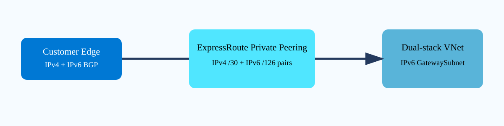
{kind=link}
Prerequisites and implementation
Start by inventorying the current circuit, peering VLAN, customer ASN, gateway SKU, public IP SKU, and whether the connection uses Virtual WAN, Route Server, FastPath, or VPN coexistence. Microsoft documents important IPv6 limitations for some of those combinations, so treat compatibility as a design gate rather than a post-change surprise. Add IPv6 prefixes to the VNet and workload subnets before expecting workloads to advertise or use them. For an existing private peering, update the peering with the IPv6 primary and secondary /126 prefixes rather than replacing the working IPv4 peering.
# Inspect current private peering
az network express-route peering show -g <rg> --circuit-name <circuit> \
-n AzurePrivatePeering -o jsonc
# Inspect the current CLI surface before changing an existing peering.
az network express-route peering update --help
# Typical update supplies the IPv6 primary/secondary peer prefixes while
# retaining the existing IPv4 VLAN/ASN settings. Use values from your design.
az network express-route peering update -g <rg> --circuit-name <circuit> \
-n AzurePrivatePeering \
--primary-peer-address-prefix-v6 <2001:db8:100::/126> \
--secondary-peer-address-prefix-v6 <2001:db8:100:4::/126>After Azure accepts the peering update, configure the matching IPv6 neighbors/address family on both customer-edge links. Do not advertise an IPv6 default merely to make a ping work; advertise the actual enterprise prefixes intended for Azure and verify return routes. On Azure, assign IPv6 prefixes and NIC addresses to a controlled test workload first so a rollback does not disturb production IPv4.
Route behavior worth proving
The decisive evidence is not that the peering resource says Succeeded. You need both IPv6 BGP sessions established, Azure IPv6 prefixes visible on the CE, enterprise IPv6 prefixes visible through the Azure path, and symmetric application routing. If a firewall between the CE and campus has separate IPv6 policy, IPv4 success says nothing about that policy. Likewise, DNS AAAA publication should follow connectivity validation; publishing AAAA too early can cause dual-stack clients to select IPv6 and expose an incomplete path to users.
Verification
az network express-route peering show -g <rg> --circuit-name <circuit> \
-n AzurePrivatePeering --query "{state:state,ipv6:ipv6PeeringConfig}" -o jsonc
az network nic show-effective-route-table -g <rg> -n <dualstack-vm-nic> -o tablestate: Enabled
ipv6PeeringConfig.state: Enabled
CE-primary IPv6 BGP: Established
CE-secondary IPv6 BGP: Established
Azure prefix 2001:db8:50::/64: present on CE
On-prem prefix 2001:db8:200::/48: active through VirtualNetworkGatewayThe important proof is the combination of enabled IPv6 peering, redundant BGP adjacency, and usable routes in both directions. A single successful IPv6 ping is weaker evidence because it can miss asymmetric policy or alternate-path problems.
Troubleshooting
az network express-route peering show -g <rg> --circuit-name <circuit> \
-n AzurePrivatePeering -o jsonc
az network nic show-effective-route-table -g <rg> -n <nic> -o jsoncipv6PeeringConfig.state: Enabled
CE-primary IPv6 BGP: Established
CE-secondary IPv6 BGP: Idle
Azure VM effective route to 2001:db8:200::/48: absentInterpret this as two separate faults until proven otherwise. The Idle secondary session points to link-specific peering addressing, VLAN, ACL, or CE configuration. The absent enterprise route can result from advertisement policy even if the primary BGP session is established. Compare received/advertised IPv6 routes on the CE before changing Azure VNet routes. If IPv6 routing is correct but an application fails, then test NSG/firewall IPv6 rules and only then publish or retain the AAAA record.
VPN Gateway AZ-SKU migration: understand the 2026 SKU transition before it becomes an outage project
Why it matters
Azure is consolidating VPN Gateway SKUs around variants that support availability-zone infrastructure. This is not merely a naming cleanup. Older VpnGw1–VpnGw5 gateways that do not end in AZ are in a migration window, and Microsoft states that the old SKUs are scheduled for deprecation after September 2026. A network team that waits until the final month turns a controlled platform migration into a change with little schedule flexibility. The engineering objective is to identify gateways that still use non-AZ SKUs, verify their public IP and GatewaySubnet prerequisites, migrate them deliberately, and prove that every S2S, P2S, and BGP dependency survives.
Architecture
The virtual network gateway resource represents a managed set of gateway instances in GatewaySubnet. An AZ-capable SKU such as VpnGw2AZ can use availability-zone infrastructure where the region supports zones. The migration changes the managed gateway platform underneath the same logical network role; it does not eliminate the need for redundant tunnels, sound on-premises routing, or active-active design when those are required. A Standard public IP is a key prerequisite for the modern path. Legacy Basic public IP dependencies must be remediated using the supported migration process before assuming an in-place SKU transition is safe.
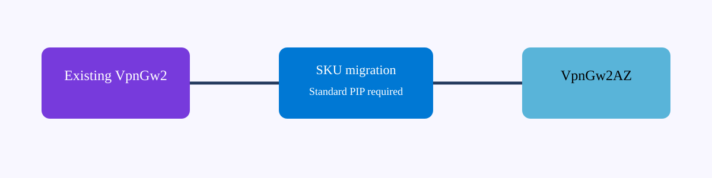
{kind=link}
Prerequisites and implementation
Inventory first. Query every virtual network gateway and record SKU, gateway type, active-active setting, BGP ASN, public IP resource IDs, and connection count. If the SKU already ends in AZ, do not schedule a migration simply because the gateway is old. If it does not, check the Microsoft mapping for the corresponding target SKU and verify the public IP uses Standard. Also inspect GatewaySubnet size; migrations and future active-active growth need enough addresses for managed instances. Capture connection status and byte counters before change so post-change validation has a baseline.
az network vnet-gateway show -g <rg> -n <gateway> \
--query "{sku:sku.name,type:gatewayType,activeActive:activeActive,bgp:enableBgp,ipConfigs:ipConfigurations[].publicIPAddress.id}" -o jsonc
az network public-ip show --ids <gateway-public-ip-resource-id> \
--query "{sku:sku.name,allocation:publicIPAllocationMethod,ip:ipAddress}" -o jsonc
# Confirm the supported migration/update command for the installed CLI.
az network vnet-gateway update --helpFor a production change, use the documented migration operation for the source/target SKU rather than deleting and recreating the gateway. Deletion changes the outage model and can change public IPs, BGP neighbors, and P2S configuration. Microsoft states that manual upgrade of eligible gateways using Standard public IPs is expected without downtime, but your validation plan should still assume that routing convergence and third-party tunnel behavior must be observed.
Change-window sequencing
Freeze unrelated tunnel changes. Export the gateway configuration, connection list, local network gateway definitions, custom IPsec policies, P2S settings, and BGP peer addresses. Start a continuous test from at least one on-premises site to an Azure workload and, if active-active, monitor both tunnel instances. Perform the supported migration, then wait for provisioning to finish before touching the peer device. If a tunnel briefly renegotiates, let normal IKE/BGP recovery occur; do not immediately reset the peer and obscure whether Azure recovered naturally.
Verification
az network vnet-gateway show -g <rg> -n <gateway> \
--query "{sku:sku.name,state:provisioningState,activeActive:activeActive}" -o json
az network vpn-connection list -g <rg> \
--query "[].{name:name,status:connectionStatus,ingress:ingressBytesTransferred,egress:egressBytesTransferred}" -o tablesku: VpnGw2AZ
state: Succeeded
activeActive: true
Name Status Ingress Egress
branch-east Connected 483920112 510882104
branch-west Connected 220184443 231993771Success means the target AZ SKU is active, provisioning completed, expected connections are Connected, and counters move under real traffic. For BGP connections, verify routes on both Azure and customer devices rather than relying only on IKE status.
Troubleshooting
sku: VpnGw2
publicIp.sku: Basic
migration eligibility: blocked / prerequisite not metA Basic public IP is a migration prerequisite issue, not a tunnel-policy problem. Follow the supported Basic-to-Standard public IP/gateway migration guidance instead of forcing a SKU update. Another common failure is a successful target SKU with one branch disconnected. Query that connection specifically, compare the Azure public peer address presented after migration with the third-party configuration, and inspect IKE/BGP logs. If all connections are Connected but a prefix is missing, focus on BGP advertisements or static local-network-gateway prefixes; do not roll back the platform migration for a route-policy defect.
az network vpn-connection show -g <rg> -n <connection> -o jsonc
az network local-gateway show -g <rg> -n <lng> -o jsoncVirtual WAN custom hub route tables and labels: policy is association plus propagation, not a single UDR
Why it matters
Traditional VNet routing teaches engineers to think in terms of a subnet-associated route table. Virtual WAN changes that mental model. A virtual hub router learns routes from connected VNets, VPN sites, ExpressRoute, and other hubs, then controls reachability through route-table association and propagation. Custom route tables and labels let you build segmentation and service-insertion behavior at the managed hub rather than maintaining UDRs on every spoke. The hard part is not creating a route object; it is understanding which connection consults which table and which tables receive each connection’s learned prefixes.
Architecture
Every hub connection has an associated route table that is used to forward traffic arriving from that connection. The same connection also propagates its routes to one or more hub route tables. Labels are logical groupings that simplify propagation to similarly purposed tables. A custom static route can point to a VNet connection or Azure Firewall resource ID. The result is a managed control plane where two VNets connected to the same hub can have different visibility even though both physically attach to the same virtual hub router.
{kind=link}
Prerequisites and implementation
Use Standard Virtual WAN and start with a route-intent diagram that identifies traffic classes. For example, production spokes may associate with a table that contains a default route to Azure Firewall while shared-services spokes associate with a different table. Before adding static routes, list the current VNet connections and their resource IDs because a hub route next hop is frequently a connection resource, not merely an IP address. PowerShell remains a documented automation surface for custom virtual-hub route tables.
$hub = Get-AzVirtualHub -ResourceGroupName "<rg>" -Name "<hub>"
$svc = Get-AzVirtualHubVnetConnection -ResourceGroupName "<rg>" \
-VirtualHubName "<hub>" -Name "<shared-services-connection>"
$route = New-AzVHubRoute -Name "shared-services" \
-Destination @("10.80.0.0/16") -DestinationType "CIDR" \
-NextHop $svc.Id -NextHopType "ResourceId"
New-AzVHubRouteTable -Name "ProdTable" -ParentObject $hub \
-Route @($route) -Label @("Production")Creating the table is only half the implementation. Update the relevant hub VNet connections so the intended table is associated and the intended route tables or labels receive propagation. Avoid broad propagation to Default when the purpose of the custom table is isolation; otherwise learned routes can leak around your segmentation design.
Traffic-flow reasoning
Assume Prod-Spoke sends to 10.80.10.20 in Shared Services. The Prod connection’s associated table is consulted. If that table contains 10.80.0.0/16 with the shared-services connection as next hop, the virtual hub forwards there. For the return packet, the Shared Services connection’s associated table must contain a route to the production prefix, either because Prod propagated it to that table/label or because you added a suitable static route. This is why one-way success or asymmetry often comes from propagation, not the forward static route.
Verification
Get-AzVHubRouteTable -ResourceGroupName "<rg>" \
-VirtualHubName "<hub>" -Name "ProdTable" | Format-List
Get-AzVirtualHubVnetConnection -ResourceGroupName "<rg>" \
-VirtualHubName "<hub>" -Name "<prod-connection>" | Format-ListRouteTable: ProdTable
Labels: Production
Route: 10.80.0.0/16 -> /hubVirtualNetworkConnections/shared-services
Prod connection associatedRouteTable: ProdTable
Propagated labels: Shared, BranchesThen use the Virtual WAN effective-routes view for the connection and verify the exact destination prefix resolves to the intended next hop. The resource configuration proves intent; effective routes prove what the hub router actually installed.
Troubleshooting
Prod -> Shared: succeeds
Shared -> Prod: fails
ProdTable contains 10.80.0.0/16
Shared associated table has no 10.40.0.0/16 production routeThis is a return-route propagation defect. Do not add a second forward route to ProdTable. Instead, inspect which tables the Prod connection propagates to and whether the Shared connection associates with one of them. If the route exists but points to Azure Firewall when direct shared-services forwarding was intended, inspect a more-specific static route versus the default security route. Keep route-table labels meaningful—such as Production, Shared, or Isolated—because troubleshooting an environment where every connection propagates to arbitrary table IDs becomes unnecessarily difficult.
ExpressRoute Microsoft-peering route filters: subscribe to service communities deliberately
Why it matters
Microsoft peering can expose Microsoft public-service prefixes over ExpressRoute, but Azure does not simply advertise every Microsoft route by default. Route filters let you select service communities and receive only the service-prefix groups you intend to use. This is both a routing-scale control and an operational safety control. A team that attaches or edits a route filter without understanding its effect can remove prefixes from BGP immediately, while a team that subscribes broadly can import routes it never planned to carry over the private WAN.
Architecture
The route filter is an Azure resource attached to the MicrosoftPeering object of an ExpressRoute circuit. It contains one Allow rule with one or more Microsoft BGP service communities. Microsoft maps those communities to service prefix groups and advertises matching routes over the Microsoft-peering BGP sessions. Your CE still applies its own inbound BGP policy, so the route filter controls what Microsoft offers while the CE policy controls what your enterprise accepts and prefers. This division is useful during troubleshooting: a missing prefix can be absent because the Azure filter never subscribed to its community or because the CE rejected it.
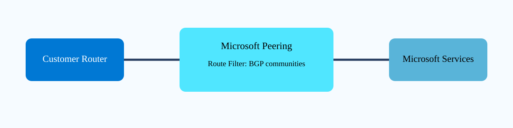
{kind=link}
Prerequisites and implementation
Microsoft peering itself has stricter prerequisites than private peering: public peering address space, ownership validation, and appropriate SNAT/public source addressing for enterprise endpoints. Do not use the peering /30 or /126 range as the application SNAT pool. Once Microsoft peering is established, query the current service-community catalog rather than hard-coding a community copied from an old document; service mappings can evolve.
az network route-filter rule list-service-communities -o table
az network route-filter create -g <rg> -n <route-filter>
az network route-filter rule create -g <rg> \
--filter-name <route-filter> -n <allow-services> \
--communities <community1> <community2> --access Allow
az network express-route peering update -g <rg> \
--circuit-name <circuit> --name MicrosoftPeering \
--route-filter <route-filter>Attach the filter only after you have a CE route-policy plan. If you update an already attached filter, Azure propagates advertisement changes through the existing BGP session. That makes filter edits production routing changes even though no BGP neighbor is reset manually.
Controlled subscription strategy
Start with the smallest service-community set that matches the business requirement. Record the expected prefix-count range and representative destination prefixes. If a service has multiple regional communities or dependencies, document why each is present. The route filter is not an application firewall: receiving a route does not authorize the application, and failing to receive a route cannot be repaired by an NSG. Keep network routing, proxy policy, and application authentication as separate layers.
Verification
az network route-filter show -g <rg> -n <route-filter> -o jsonc
az network route-filter rule show -g <rg> --filter-name <route-filter> \
-n <allow-services> -o jsonc
az network express-route peering show -g <rg> --circuit-name <circuit> \
-n MicrosoftPeering -o jsoncrouteFilter: /subscriptions/.../routeFilters/CorpMicrosoftServices
rule.access: Allow
rule.routeFilterRuleType: Community
communities: [12076:50xx, 12076:50yy]
CE received-routes: expected Microsoft service prefixes presentThe CE received-route table is the final proof. Azure configuration can be correct while a CE route map filters the community or maximum-prefix protection suppresses the session.
Troubleshooting
MicrosoftPeering: Enabled
routeFilter: attached
CE BGP: Established
Expected service prefix: absentFirst map the missing service to its current Microsoft community and confirm that community exists in the route-filter rule. If it does, inspect CE received routes before inbound policy and then the accepted BGP table. If the community is missing, update the one Allow rule and observe route arrival. If you detach the route filter, Microsoft prefixes are no longer advertised through the peering, so detachment is not a neutral troubleshooting action. Use a maintenance window for broad changes and monitor prefix counts to catch accidental route withdrawal quickly.
az network route-filter rule update -g <rg> --filter-name <route-filter> \
-n <allow-services> --add communities '<required-community>'NAT Gateway SNAT allocation and timers: design outbound scale from flows, not VM count
Why it matters
Outbound Internet failures are often misdiagnosed as firewall or DNS problems when the real constraint is source NAT state. Azure NAT Gateway centralizes outbound SNAT for associated subnets and dynamically allocates ports across workloads. The useful design unit is therefore concurrent flows and destination behavior, not simply the number of VMs. Each associated public IPv4 address contributes 64,512 SNAT ports, and NAT Gateway can use multiple public IPs. The service also has TCP idle and port-reuse timers that influence long-lived connections and bursty reconnect patterns.
Architecture
A subnet association makes NAT Gateway the outbound Internet path for new flows from resources in that subnet. NAT Gateway chooses a public IP and source port, maintains the translation state, and returns response traffic to the originating private tuple. TCP and UDP have separate port inventories. StandardV2 adds zone-redundant behavior and IPv6/ICMP capabilities that differ from the older Standard SKU. For TCP, the idle timeout is configurable from 4 to 120 minutes, but increasing it consumes translation state longer; Microsoft recommends keepalives rather than simply stretching idle time for long-lived applications.
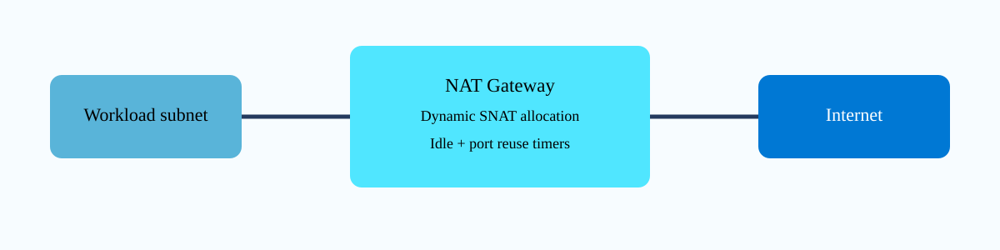
{kind=link}
Prerequisites and implementation
Choose the SKU based on availability requirements and regional support. Create a compatible public IP or prefix, create the NAT Gateway, associate the public address, then associate the NAT Gateway with each workload subnet that should use it. Do not attach different outbound mechanisms casually: explicit outbound from NAT Gateway takes precedence for Internet-bound flows, so document how it interacts with public IPs, Load Balancer outbound rules, and firewalls in your design.
az network public-ip create -g <rg> -n <nat-pip> -l <region> \
--sku Standard --allocation-method Static
az network nat gateway create -g <rg> -n <natgw> -l <region> \
--public-ip-addresses <nat-pip> --idle-timeout 4
az network vnet subnet update -g <rg> --vnet-name <vnet> \
-n <workload-subnet> --nat-gateway <natgw>
az network nat gateway show -g <rg> -n <natgw> -o jsoncIf telemetry shows genuine SNAT pressure, add public IP capacity rather than increasing TCP idle timeout. A longer idle timeout can worsen port retention. For applications with quiet but valid TCP sessions, enable application/OS TCP keepalives so the flow is not idle from the NAT device’s perspective.
Timers and failure patterns
Microsoft documents a default four-minute TCP idle timeout and fixed four-minute UDP idle timeout. Closed flows also have reuse hold-down behavior; for example, FIN-closed TCP ports are retained longer than RST-closed ports before reuse to the same destination. These timers explain why a client that rapidly opens and closes thousands of sessions to one remote endpoint can behave differently from the same number of sessions spread across many destinations. Capacity tests should reproduce destination concentration, connection lifetime, and reconnect cadence—not just total requests per second.
Verification
az network nat gateway show -g <rg> -n <natgw> \
--query "{state:provisioningState,idle:idleTimeoutInMinutes,pips:publicIpAddresses[].id,subnets:subnets[].id}" -o jsonc
az monitor metrics list --resource <natgw-resource-id> \
--metric SNATConnectionCount --interval PT1M -o jsoncstate: Succeeded
idle: 4
pips: [/.../publicIPAddresses/nat-pip-01]
subnets: [/.../subnets/app]
SNATConnectionCount: rises under test traffic without failure spikesAlso query an external echo endpoint from a workload and confirm the observed source address matches a NAT Gateway public IP. That proves actual data-path selection rather than merely resource association.
Troubleshooting
Symptom: intermittent outbound connect failures during bursts
NAT Gateway state: Succeeded
SNATConnectionCount: near sustained high watermark
FailedSNATConnectionCount: increasing
Application: reconnect loop to one remote APIInterpret this as translation pressure before changing NSGs. Reduce unnecessary reconnects, use connection pooling, verify keepalive behavior, and add NAT public IP capacity when justified. If failures occur at almost exactly the configured idle interval instead, inspect whether the application sends keepalives. Raising idle timeout to 120 minutes may hide the symptom but retain ports for much longer, which is a poor trade when connection volume is high. For UDP, remember the idle timeout is not configurable; keepalive traffic must exist in both directions when both directional states need preservation.
Azure DNS alias records: bind DNS to a resource lifecycle instead of copying an address
Why it matters
A conventional A record stores an IP address. If the Azure public IP resource behind that record changes or is deleted, DNS can become stale and potentially point at an address later assigned elsewhere. An Azure DNS alias record can reference the Azure resource itself. For supported targets such as Standard public IP resources, Azure DNS resolves the resource’s current address and can leave the alias record empty if the resource disappears, reducing dangling-record risk. Alias records also solve selected zone-apex scenarios where CNAME is not permitted by DNS standards.
Architecture
The control plane stores a resource ID as the alias target rather than only a literal address. At query time Azure DNS returns the address represented by that supported target. The client still receives a normal A or AAAA answer; it does not learn the Azure resource ID. This distinction means alias behavior is not the same as a CNAME redirect. For a public IP target, there is no extra DNS lookup to another hostname. Microsoft currently documents support for A, AAAA, and CNAME alias record sets with specific Azure target types and a limit of 50 alias record sets per resource.
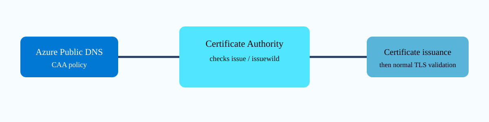
{kind=link}
Prerequisites and implementation
Host the public zone in Azure DNS and verify delegation from the registrar before troubleshooting aliases. Create the target resource first and capture its resource ID. The most straightforward implementation surface is Azure Resource Manager/Bicep or the portal; Azure CLI can create and inspect DNS record sets, but support for setting alias target fields can vary by command version, so do not invent a flag. When CLI lacks the required create property, use an ARM/Bicep resource that sets targetResource.id and use CLI for verification.
# Create/inspect the target Standard public IP.
az network public-ip create -g <rg> -n <pip> -l <region> \
--sku Standard --allocation-method Static
PIP_ID=$(az network public-ip show -g <rg> -n <pip> --query id -o tsv)
# Bicep concept for an A alias record set:
# resource aliasA 'Microsoft.Network/dnsZones/A@2018-05-01' = {
# parent: zone
# name: 'app'
# properties: { TTL: 60, targetResource: { id: pip.id } }
# }
az network dns record-set a show -g <dns-rg> -z <zone> -n app -o jsoncUse a low but sensible TTL during migration testing, then raise it according to operational needs. Alias resource tracking does not make DNS caching disappear; resolvers can still retain an answer until TTL expiration. For apex use cases, compare alias records with the newer Traffic Manager Linked Records when Traffic Manager is the target because Microsoft now recommends linked records for new Traffic Manager-backed configurations.
Lifecycle behavior
Test the behavior you are buying. Record the current public IP, query the alias, then perform a controlled target lifecycle change that is supported by your application design. Confirm the DNS answer follows the resource. If the target resource is deleted, verify that the alias no longer serves a stale literal address. This is especially valuable for automated environments where public IP resources can be recreated and static DNS files otherwise drift from infrastructure state.
Verification
az network dns record-set a show -g <dns-rg> -z <zone> -n app -o jsonc
az network public-ip show -g <rg> -n <pip> --query "{id:id,ip:ipAddress}" -o json
nslookup app.<zone>DNS record targetResource.id: /subscriptions/.../publicIPAddresses/app-pip
Public IP: 203.0.113.24
nslookup answer: 203.0.113.24The resource ID proves alias binding; the matching DNS answer proves resolution. If only the literal A record value appears and targetResource is absent, you created a conventional record rather than an alias.
Troubleshooting
targetResource.id: /subscriptions/.../publicIPAddresses/app-pip
Public IP resource: deleted
nslookup: no A answer / empty alias setThis is expected protective behavior, not a DNS outage caused by Azure. Restore or retarget the intended resource. A different failure is when the alias record looks correct in Azure but public resolvers return NXDOMAIN for the entire zone; inspect registrar delegation and Azure DNS name servers because alias configuration cannot repair broken parent delegation. If a resolver still returns the old address immediately after a target change, compare TTL and authoritative results before editing the record.
NSG augmented rules and service tags: reduce rule sprawl without losing five-tuple precision
Why it matters
Large NSGs become difficult to reason about when every source subnet and application port receives its own rule. Augmented security rules let one Resource Manager NSG rule contain multiple explicit IP addresses/ranges and multiple ports/ranges, reducing repetitive objects while preserving priority-based five-tuple evaluation. Service tags solve a different maintenance problem: Microsoft maintains the IP-prefix membership for a named Azure service, so you do not need to chase published address changes manually. Combining these capabilities carefully can make policy smaller without making it vague.
Architecture
An NSG evaluates traffic by direction, protocol, source address/port, destination address/port, priority, and action. Augmented rules expand the set syntax for explicit addresses and ports inside one rule. Service tags represent Microsoft-managed prefix groups such as Storage or AzureLoadBalancer. They are not identities and they do not validate an application protocol; they are address-prefix abstractions. A key constraint is that you cannot put multiple service tags or multiple application security groups into one rule in the same way you can list multiple explicit CIDRs.
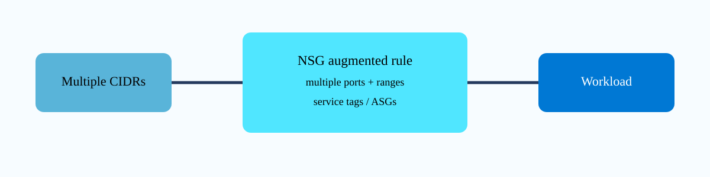
{kind=link}
Prerequisites and implementation
Use Resource Manager NSGs and design rules around application intent. For example, two management CIDRs may need TCP 22 and 443 to a management subnet. Instead of four nearly identical rules, use one augmented rule with two source prefixes and two destination ports. For Azure service access, use a service tag only when its documented scope matches your requirement. A broad tag can include more addresses than a narrowly controlled private endpoint architecture, so smaller rule count is not automatically stronger security.
az network nsg create -g <rg> -n <nsg> -l <region>
az network nsg rule create -g <rg> --nsg-name <nsg> \
-n Allow-Admin-MultiSource --priority 200 --direction Inbound \
--access Allow --protocol Tcp \
--source-address-prefixes 10.10.10.0/24 10.20.20.0/24 \
--source-port-ranges '*' \
--destination-address-prefixes 10.50.10.0/24 \
--destination-port-ranges 22 443
az network nsg rule create -g <rg> --nsg-name <nsg> \
-n Allow-Storage-Out --priority 210 --direction Outbound \
--access Allow --protocol Tcp --source-address-prefixes VirtualNetwork \
--destination-address-prefixes Storage --destination-port-ranges 443Associate the NSG with the intended subnet or NIC and document which layer owns policy. Attaching similar NSGs at both subnet and NIC can create effective-policy surprises because both must permit the flow.
Design boundaries
Service tags update automatically, which is excellent for operational maintenance but means the concrete IP list can change without an NSG edit. If a compliance process requires immutable destination addresses, a service tag may not satisfy that control. Conversely, copying today’s Storage IP ranges into explicit CIDRs creates maintenance debt and can silently break when Microsoft expands the service. Use service tags for service reachability and private endpoints when the requirement is private per-resource access; they solve different problems.
Verification
az network nsg rule show -g <rg> --nsg-name <nsg> \
-n Allow-Admin-MultiSource -o jsonc
az network nic show-effective-nsg -g <rg> -n <nic> -o jsonc
az network watcher test-ip-flow -g <rg> --vm <vm> \
--direction Inbound --protocol TCP \
--local <vm-ip>:443 --remote 10.20.20.25:51000sourceAddressPrefixes: [10.10.10.0/24, 10.20.20.0/24]
destinationPortRanges: [22, 443]
IP Flow Verify: Allow
ruleName: securityRules/Allow-Admin-MultiSourceEffective NSG and IP Flow Verify are more useful than staring at the configured NSG alone because they account for the actual VM/NIC context.
Troubleshooting
Configured rule: Allow-Admin-MultiSource priority 200
IP Flow Verify: Deny
ruleName: securityRules/Deny-Restricted priority 150The lower numeric priority wins, so the augmented allow rule is not defective. Fix the policy ordering or the higher-priority rule if the business intent truly permits the flow. Another common error is assuming a service tag can be combined as a list with several other tags in one augmented field; split those into separate rules when required. If IP Flow Verify returns Allow but the connection fails, stop changing NSGs and move to route, guest firewall, load-balancer, or application evidence.
Application Gateway v2 autoscaling and zone redundancy: capacity is a control loop, not a fixed appliance size
Why it matters
Application Gateway v2 removes the old habit of selecting a fixed appliance size and hoping it matches peak traffic. Autoscaling lets the service add or remove managed instances within configured minimum and maximum bounds. Zone redundancy spreads the managed gateway across availability zones where supported. The important design insight is that autoscaling is not instantaneous: Microsoft documents roughly three to five minutes to provision a new instance, and scale-in drains existing connections for five minutes. A minimum of zero is allowed, but a production design must decide whether cold-start elasticity is acceptable.
Architecture
The frontend VIP remains stable while a managed fleet of Application Gateway instances processes listener, TLS, routing, rewrite, and WAF functions. Autoscale monitors capacity demand and adjusts the fleet. Each instance can provide up to roughly ten capacity units, where capacity reflects throughput, current connections, and connection rate rather than a single CPU percentage. Zone redundancy places instances across zones, but the backend application should also be zone resilient; a zone-redundant gateway cannot make a single-zone backend available.
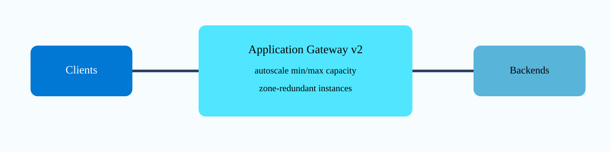
{kind=link}
Prerequisites and implementation
Use Standard_v2 or WAF_v2, a dedicated Application Gateway subnet, and a static frontend configuration. Decide minimum capacity from normal traffic plus failure tolerance rather than choosing zero simply because it is permitted. Set a maximum high enough for expected bursts but low enough to provide a cost guardrail. If you change maximum below the current instance count, Microsoft notes that the lower maximum is not enforced immediately; scale-in must naturally bring the instance count below the new ceiling.
# Inspect current gateway autoscale configuration.
az network application-gateway show -g <rg> -n <appgw> \
--query "{sku:sku,autoscale:autoscaleConfiguration,zones:zones}" -o jsonc
# Azure CLI supports autoscale configuration on Application Gateway create/update.
az network application-gateway update -g <rg> -n <appgw> \
--set autoscaleConfiguration.minCapacity=2 \
autoscaleConfiguration.maxCapacity=10
az network application-gateway show -g <rg> -n <appgw> \
--query autoscaleConfiguration -o jsonFor a new deployment, select zones during creation according to regional support. Zone assignment is an architectural property; do not assume every existing gateway can be converted in place without checking current Microsoft guidance. Keep health probes application-aware so autoscaling adds capacity that is actually able to serve requests.
Capacity planning that avoids false confidence
Autoscale reacts to demand; it does not predict an instantaneous flash crowd with zero warm capacity. For an event-driven application, reserve a sensible minimum before the event. Monitor Capacity Units, Current Connections, Failed Requests, backend health, and response latency. A rising capacity signal followed by instance growth is normal. A sudden 503 spike with healthy backends and maximum capacity already reached indicates a ceiling problem; a 502 spike with unhealthy backends is a backend/probe problem and raising max instances will not fix it.
Verification
az network application-gateway show -g <rg> -n <appgw> \
--query "{state:provisioningState,min:autoscaleConfiguration.minCapacity,max:autoscaleConfiguration.maxCapacity,zones:zones}" -o json
az monitor metrics list --resource <appgw-id> \
--metric CapacityUnits,CurrentConnections,FailedRequests -o jsoncstate: Succeeded
min: 2
max: 10
zones: [1,2,3]
CapacityUnits: increases under load
FailedRequests: remains near baseline
Backend health: HealthyRun a controlled load test long enough to observe scaling behavior. A two-minute test can end before a new instance finishes provisioning and therefore cannot validate scale-out.
Troubleshooting
Current demand: rising
CapacityUnits: sustained high
Configured maxCapacity: 4
FailedRequests: increasing
Backend health: HealthyThis pattern points toward the autoscale ceiling or an abrupt burst that outpaced provisioning. Raise the maximum only after confirming backend capacity can also scale, and consider a higher minimum before predictable events. If availability metrics dip briefly during scale transitions but recover within seconds, Microsoft documents that as expected behavior; correlate with application failures before declaring an outage. During scale-in, remember the five-minute drain: long-lived connections can close when that drain period ends, so application retry behavior matters.
Azure Front Door rule sets: transform requests at the edge without turning rules into an invisible application
Why it matters
Front Door routes can carry rule sets that inspect request attributes and perform actions such as redirects, URL rewrites, header modifications, cache changes, or origin-group overrides. This moves useful traffic-management logic to Microsoft’s global edge. The danger is operational opacity: if dozens of ordered rules rewrite paths and headers, the application team may see a request that looks nothing like what the client sent. A good design uses rule sets for explicit edge concerns and includes a simple way to prove which rule version executed.
Architecture
A request reaches the Front Door edge, where WAF processing occurs before the route and associated rule-set behavior. Rule sets are attached to routes. Rules are evaluated in order, and all conditions within a rule must match for its actions to run. Depending on configuration, rule processing can continue to later rules. Actions can alter the request before it reaches the origin or alter the response before it returns to the client. This is data-plane logic executed at the edge; the Azure Resource Manager objects define the control-plane policy.
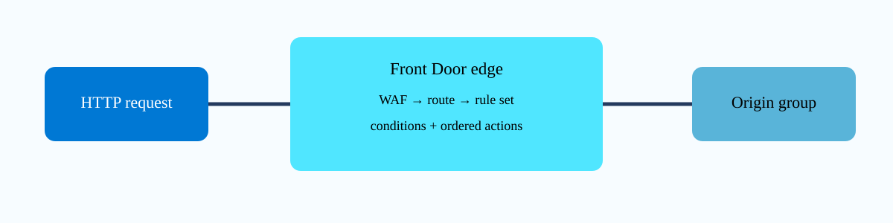
{kind=link}
Prerequisites and implementation
Create a Front Door Standard or Premium profile, endpoint, origin group, origin, and route. Then create a rule set and associate it with the route. Keep rule names tied to business behavior, not ticket numbers. Microsoft specifically recommends adding a custom response header containing a rule/version marker while validating propagation; this gives you a client-visible proof that the new edge policy is active.
az afd rule-set create -g <rg> --profile-name <afd-profile> \
--rule-set-name EdgePolicy
# Example: redirect HTTP to HTTPS based on RequestScheme.
az afd rule create -g <rg> --profile-name <afd-profile> \
--rule-set-name EdgePolicy -n ForceHttps --order 1 \
--match-variable RequestScheme --operator Equal --match-values HTTP \
--action-name UrlRedirect --redirect-protocol Https \
--redirect-type Moved
az afd rule list -g <rg> --profile-name <afd-profile> \
--rule-set-name EdgePolicy -o tableFor header, rewrite, or cache actions, use the documented action parameters from the current CLI version. Paths are case-sensitive. Test each condition with both a matching and nonmatching request; otherwise you prove only the happy path and may miss an overly broad rule.
Ordering and origin effects
Suppose rule 1 redirects HTTP to HTTPS, rule 2 rewrites /legacy/* to /v2/*, and rule 3 adds a response header. An HTTP client should be redirected before an origin request is needed. An HTTPS /legacy request should reach the origin with the rewritten path. If the origin logs still show /legacy, either the rule is not associated with the route, the path condition did not match case-sensitively, or propagation has not completed. Avoid using an origin application redirect and a Front Door redirect for the same path because loops become difficult to distinguish.
Verification
az afd rule-set list -g <rg> --profile-name <afd-profile> -o table
az afd rule list -g <rg> --profile-name <afd-profile> \
--rule-set-name EdgePolicy -o jsonc
curl -I http://<frontdoor-host>/legacy/test
curl -I https://<frontdoor-host>/legacy/testHTTP request: 301/redirect to https://...
HTTPS request: 200
X-Edge-Rule-Version: EdgePolicy-2026-09-11
Origin log path: /v2/testThe custom version header is valuable because it separates “Azure configuration says the rule exists” from “the edge POP serving this client has the expected policy.”
Troubleshooting
az afd rule list: rule exists, order=2
curl response: no X-Edge-Rule-Version
Origin log: /legacy/test
Route ruleSets: []The rule set exists but is not associated with the route. Fix association rather than editing match conditions. If the route shows the rule set but one path does not match, compare case, path segments, query-string conditions, and operator semantics. If a redirect loop occurs, capture each Location header with curl -IL and identify whether Front Door or the origin emits each hop. Rules should remain small enough that an operator can reconstruct the request transformation from edge to origin without guessing.
Standard Load Balancer Floating IP: preserve the frontend tuple for clusters and NVAs
Why it matters
Most Load Balancer rules translate a frontend IP:port to a backend IP:port. Some clustered applications and network virtual appliances need a different model: the backend must see and bind the load balancer frontend address so multiple rules or clustered services can reuse ports predictably. Azure calls this Floating IP, and it is closely associated with direct-server-return style behavior. Enabling it changes how the frontend tuple is presented to the guest, so the guest operating system or appliance must be configured to accept traffic for an IP that is not the NIC’s primary address.
Architecture
The Standard Load Balancer still hashes new flows to a healthy backend. With Floating IP enabled on the rule, Azure changes the IP mapping so the frontend IP is available in the backend packet path rather than being translated in the normal way. This supports scenarios such as SQL failover clustering, NVAs, and multiple TLS endpoints where backend port reuse matters. It does not automatically configure the guest loopback, weak-host behavior, or appliance cluster. The platform rule and guest configuration are two halves of the feature.
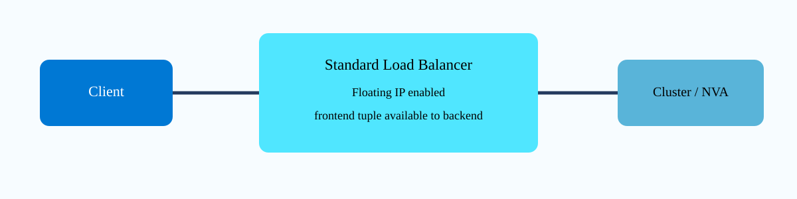
{kind=link}
Prerequisites and implementation
Build a Standard Load Balancer with frontend IP configuration, backend pool, and a health probe that reflects application readiness. Add backend NICs, then create a rule with Floating IP enabled. Use the same frontend and backend port where required by the application design. After Azure configuration, configure each backend according to Microsoft and vendor guidance so the frontend address can be accepted locally without ARP conflicts.
az network lb rule create -g <rg> --lb-name <lb> \
-n ClusterRule --protocol Tcp \
--frontend-ip-name <frontend-config> \
--backend-pool-name <backend-pool> \
--frontend-port 1433 --backend-port 1433 \
--probe-name <probe> --floating-ip true
az network lb rule show -g <rg> --lb-name <lb> \
-n ClusterRule --query "{floating:floatingIP,frontend:frontendPort,backend:backendPort,protocol:protocol}" -o jsonFor HA Ports on NVAs, Floating IP may be combined with protocol All and port 0 according to the appliance architecture, but do not assume every vendor supports the same return-path model. Follow the vendor’s Azure design for session state and guest interfaces.
Guest operating-system implications
The backend may need a loopback interface carrying the frontend IP and settings that prevent the guest from answering ARP for that address on the data NIC. Windows clustering and Linux appliances use different mechanisms. This is why a healthy Azure load-balancer rule can still time out: Azure delivered the packet, but the guest rejected a destination IP it does not consider local. Packet capture on the backend is especially useful here because it shows whether the destination remains the frontend IP.
Verification
az network lb rule show -g <rg> --lb-name <lb> -n ClusterRule -o jsonc
az network lb probe show -g <rg> --lb-name <lb> -n <probe> -o jsonc
floatingIP: true
frontendPort: 1433
backendPort: 1433
protocol: Tcp
Backend health: Healthy
Backend packet capture destination: <load-balancer-frontend-ip>:1433
Application listener: bound to floating/cluster addressThose observations prove both platform and guest sides. Merely seeing floatingIP=true does not prove the guest can consume the traffic.
Troubleshooting
Load Balancer rule: floatingIP=true
Probe: Healthy
Backend capture: SYN arrives to 10.50.0.100:1433
Guest listener: only 10.50.0.4:1433
Client: SYN timeoutThe load balancer is doing its job; the guest does not own/listen on the floating frontend address. Correct loopback/cluster binding and weak-host settings according to the OS/application guide. If no SYN reaches the backend, inspect backend-pool membership, health, NSG, and rule frontend selection. If forward traffic works but responses bypass the expected path, analyze the application’s direct-return and route behavior rather than toggling Floating IP repeatedly.
Network Watcher Next Hop: ask Azure which route actually wins for one destination
Why it matters
Effective route tables can contain system routes, VNet peering routes, BGP routes, and UDRs. Reading the whole table is necessary for design work, but during an outage you often need one immediate answer: for traffic leaving this VM NIC toward this destination IP, what next-hop type will Azure select? Network Watcher Next Hop evaluates that question and returns the selected next-hop type, next-hop IP where relevant, and route-table context. It is a routing diagnostic, not a connectivity test, so it pairs naturally with IP Flow Verify and connection troubleshooting.
Architecture
The source is a VM/NIC and private source IP. You provide a destination IP. Network Watcher evaluates Azure’s effective route selection for that source and reports outcomes such as Internet, VirtualAppliance, VirtualNetworkGateway, VnetLocal, or None. A result of None is particularly useful: Azure may have a system route covering the destination range but no valid forwarding next hop. That tells you to stop changing NSGs because there is no route to carry an allowed packet.
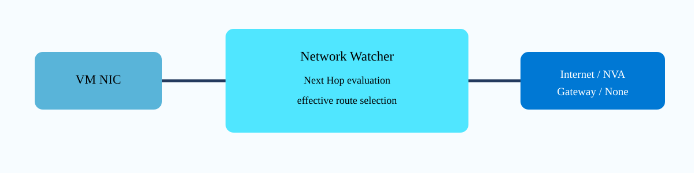
{kind=link}
Prerequisites and implementation
Ensure Network Watcher is enabled in the VM’s region. You need the VM, NIC, source private IP, and exact destination IP from the failed flow. Do not substitute a nearby address because longest-prefix route selection can make two addresses in adjacent networks choose different next hops. Next Hop requires no persistent data-plane agent configuration; it is an Azure control-plane diagnostic against the networking state.
az network watcher configure --resource-group NetworkWatcherRG \
--locations <region> --enabled
az network watcher show-next-hop \
--resource-group <vm-rg> --vm <vm> --nic <nic> \
--source-ip <vm-private-ip> --dest-ip <destination-ip> -o table
az network nic show-effective-route-table -g <vm-rg> -n <nic> -o tableUse Next Hop first to identify the winning route, then use the effective route table to understand why it won. This avoids scrolling through dozens of routes before you know which prefix matters.
Route-selection examples
If a VM should send Internet traffic through a firewall, a destination such as 8.8.8.8 should return VirtualAppliance with the firewall private IP when a 0.0.0.0/0 UDR is active. If it returns Internet, the route table may not be associated with the subnet, the UDR may be disabled, or a different route may be more specific. For an on-premises destination, VirtualNetworkGateway is expected when BGP/system routing supplies the path. A None result for an RFC1918 destination can occur when Azure has a default null-like system route and no VNet/on-premises route makes that prefix reachable.
Verification
az network watcher show-next-hop -g <rg> --vm <vm> --nic <nic> \
--source-ip 10.0.0.4 --dest-ip 8.8.8.8 -o json
{
"nextHopType": "VirtualAppliance",
"nextHopIpAddress": "10.0.1.4",
"routeTableId": "/subscriptions/.../routeTables/rt-spoke"
}For a forced-tunnel design, this is strong evidence that Azure selected the intended NVA. Next verify the NVA actually receives and forwards the packet; Next Hop does not inspect appliance policy or health.
Troubleshooting
Destination: 172.31.0.100
nextHopType: None
routeTableId: System RouteAzure has no forwarding next hop for that destination. Inspect effective routes and determine whether the missing path should come from a VNet address space, peering, UDR, or BGP advertisement. Do not create an allow-all NSG rule; security policy cannot make a nonexistent route forward. Another failure pattern is nextHopType=VirtualAppliance but nextHopIpAddress points to an old firewall address. Fix the UDR next hop and then rerun the exact same Next Hop query. Keeping the test tuple constant lets you prove the route change rather than merely observing a different test.
az network nic show-effective-route-table -g <rg> -n <nic> \
--query "[?contains(addressPrefix[0], '0.0.0.0') || nextHopType=='VirtualAppliance']" -o jsoncAzure Firewall with NAT Gateway V2: separate inspection from zone-redundant outbound SNAT scale
Why it matters
Azure Firewall can perform outbound SNAT itself, but very large outbound environments can require many SNAT ports and stable egress addresses. Associating NAT Gateway with AzureFirewallSubnet changes the outbound model: the firewall still enforces network/application policy, but NAT Gateway performs Internet SNAT after the firewall. StandardV2 NAT Gateway adds zone-redundant behavior, avoiding the mismatch of a zone-redundant firewall paired with a zonal Standard NAT Gateway. This is particularly relevant for high-connection workloads such as Azure Virtual Desktop or large proxy-like egress patterns.
Architecture
Spoke UDRs send Internet-bound traffic to Azure Firewall. The firewall evaluates policy and forwards permitted traffic using its private instance path. Because NAT Gateway V2 is associated with AzureFirewallSubnet, NAT Gateway performs the final outbound SNAT and the Internet sees the NAT Gateway public IP. Inbound DNAT remains on the Azure Firewall public IP, and firewall management/health traffic also retains the firewall public IP. Microsoft explicitly states this is not double NAT: the firewall sends outbound traffic to NAT Gateway using its private IP rather than first translating to the firewall public IP.
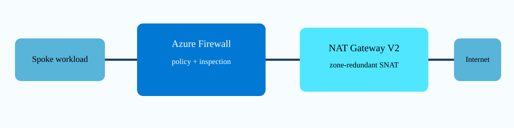
{kind=link}
Prerequisites and implementation
Use a hub VNet with the correctly named AzureFirewallSubnet, a zone-redundant Azure Firewall design where supported, and NAT Gateway V2 with compatible StandardV2 public IP resources. Microsoft’s current tutorial requires Azure CLI 2.78 or later for the V2 workflow. The firewall still needs its own Standard public IP even when NAT Gateway handles outbound traffic because inbound DNAT, health, metrics, and platform management use the firewall address.
# Create NAT Gateway V2/public IP according to current CLI V2 syntax,
# then associate it with AzureFirewallSubnet.
az network vnet subnet update -g <rg> --vnet-name <hub-vnet> \
-n AzureFirewallSubnet --nat-gateway <natgw-v2>
az network vnet subnet show -g <rg> --vnet-name <hub-vnet> \
-n AzureFirewallSubnet --query "{natGateway:natGateway.id,prefix:addressPrefix}" -o json
az network firewall show -g <rg> -n <firewall> \
--query "{state:provisioningState,privateIp:ipConfigurations[0].privateIPAddress,publicIp:ipConfigurations[0].publicIPAddress.id}" -o jsoncKeep the spoke 0.0.0.0/0 UDR pointing to the firewall private IP. Do not change the spoke route to NAT Gateway; NAT Gateway is not a routed next hop and cannot inspect traffic. Its subnet association causes outbound SNAT after the firewall forwards the permitted flow.
SNAT capacity and address governance
Azure Firewall provides 2,496 SNAT ports per public IP per backend scale-set instance, while NAT Gateway provides 64,512 SNAT ports per public IP and dynamically allocates them at subnet level. NAT Gateway supports multiple public IPs, so a small, controlled egress address set can provide substantial translation capacity. This can simplify downstream partner allowlists compared with attaching very large numbers of public IPs to the firewall. If several NAT public IPs are attached, the specific address used for a flow is not something you select per rule; design partner allowlists for the whole configured egress set.
Verification
az network vnet subnet show -g <rg> --vnet-name <hub-vnet> \
-n AzureFirewallSubnet --query natGateway.id -o tsv
az network nic show-effective-route-table -g <spoke-rg> -n <spoke-nic> -o table
# From the workload, call a trusted external IP echo service and compare source.AzureFirewallSubnet natGateway.id: /subscriptions/.../natGateways/natgw-v2
Spoke 0.0.0.0/0 next hop: VirtualAppliance 10.0.1.4
Firewall application rule log: Allow
External observed source IP: <NAT-Gateway-V2-public-IP>
Inbound DNAT listener public IP: <Azure-Firewall-public-IP>This proves the separation of roles: route and policy go through Firewall; outbound identity comes from NAT Gateway; inbound publishing remains on Firewall.
Troubleshooting
Firewall log: Allow
Spoke next hop: VirtualAppliance 10.0.1.4
External source IP: Azure Firewall public IP, not NAT Gateway V2 IP
AzureFirewallSubnet natGateway: nullThe NAT Gateway is not associated with AzureFirewallSubnet, so Firewall continues to SNAT outbound traffic. Fix the subnet association; do not add a UDR to the NAT Gateway. If the association exists but Internet traffic fails, inspect NAT Gateway provisioning/public-IP state and SNAT metrics, then confirm the firewall still allows the flow. If inbound DNAT stops after adding NAT Gateway, verify the client is connecting to the firewall public IP; NAT Gateway’s public IP is outbound-only in this architecture and is not a replacement DNAT frontend.